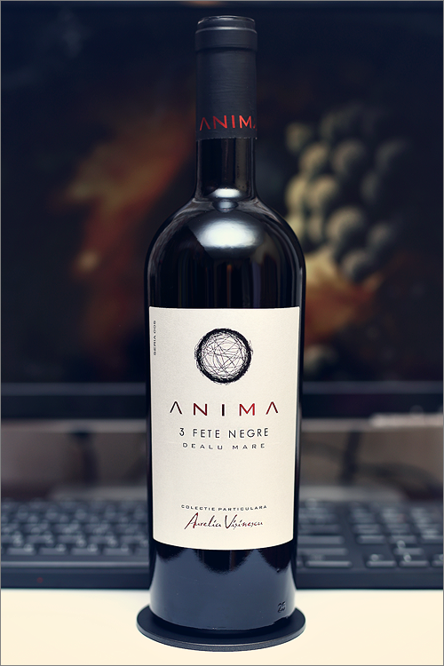

Trei Fete Negre
Va prezint un vin rosu exceptional, un cupaj de Feteasca Neagra.
Selectat cu grija din anii de recolta exceptionali 2013, 2014, 2015 vinul a fost desavarsit prin maturarea timp de 19 luni in butoaie de stejar, urmat de invechirea timp de 12 luni in sticla, inainte de a fi lansat pe piata. Rezultatul este un vin generos, intens colorat, corpolent, cu textura catifelata, cu miros de coacaz negru si mirodenii bine echilibrate de vanilie provenite din lemnul de stejar. Se serveste la 18 grade C cu branza sau carne fripta.
Asamblajul 3 Fete Negre seria 005 este rezultatul celor mai buni struguri din soiul Fetească Neagră,
Cupajul este inedit întrucât fiecare an de recoltă își aduce aportul său. Vinul reflectă caracterul terroirului din Fintesti, Dealu Mare , al soiului românesc Fetească Neagră , dar și inspirația și meșteșugul oenologului Aurelia Vișinescu
